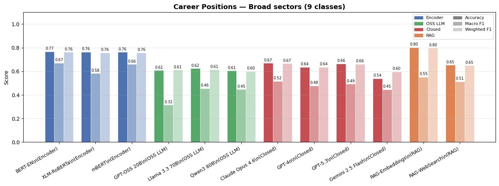
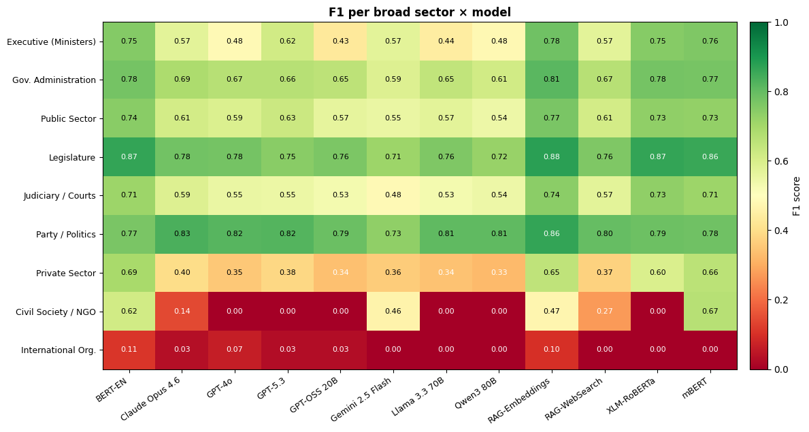

A systematic benchmark evaluating NLP tools and Large Language Models for the automated collection, extraction, and annotation of political career trajectories.
Since the Prosopographia Imperii Romani — the first collective biography of Roman elites, whose final volume appeared only in 2015, a century after work began — scholars have faced the same fundamental bottleneck: gathering biographical data on political elites is slow, expensive, and labour-intensive. Large Language Models and NLP offer the potential to transform this process, but the discipline still lacks shared benchmarks to evaluate how well these tools actually perform.
This project introduces a benchmark framework for the automated reconstruction of political career trajectories, built on the CoREx gold-standard corpus — a manually curated, multilingual dataset covering career, educational and demographic information on over 7,000 political elites across 35 countries. Benchmarking is structured around three analytically distinct pipeline stages, and a range of model families are evaluated across each stage against precision, recall, and F1 metrics.
The open-source code repository and evaluation library are designed so that results from future work can be directly compared to the baselines reported here, providing a reproducible foundation for the field. The paper was prepared for delivery at the PolMeth Europe 2026 Conference at Trinity College Dublin.
This is a collaborative project with Bastián González-Bustamante (Leiden University), Anne Bellon (UTC Compiègne), Levent Demirelli (Istanbul Beykent University), Jan-Hinrik Meyer-Sahling (University of Nottingham), and Fanni Toth (Loughborough University) — all members of CoREx Working Group 2.
The pipeline for constructing elite background datasets can be decomposed into three analytically distinct stages, each evaluated independently to isolate where performance is gained or lost.
Given a list of individuals — name, position, country, year — can a system reliably identify webpages containing relevant biographical information? Evaluated using precision and recall on retrieved URLs against a human-curated gold standard. Tests whether Google CSE queries with LLM-based filtering outperform simple keyword search.
Given unstructured biographical text and a predefined schema, can a system accurately extract structured career records? Evaluated separately for atomic attributes (birth year, gender, birthplace) and composite attributes (career history, education history). Performance reported at record level using precision and recall.
Given an already-extracted career position, can a system correctly assign the right sector or policy area label from a standardised codebook? Evaluated using accuracy, macro F1, and weighted F1. An additional semantic similarity metric based on BERT embeddings captures graded proximity between incorrect predictions and the gold label.
Twelve model configurations spanning four families are benchmarked, enabling systematic comparison of performance, cost, and robustness across pipeline stages.
Supervised classification using BERT-style architectures, fine-tuned on a training split of the CoREx gold standard.
Open-weight generative models evaluated in zero-shot and few-shot prompting configurations.
Closed-source frontier models accessed via API, evaluated with standardised prompt templates.
LLMs augmented with retrieved context — codebook descriptions, institutional definitions — to ground classification decisions.
Experiments are ongoing and results are preliminary. The graphs below show early performance data on the career annotation task — classifying positions into broad sectors (9 classes) and mapping F1 scores per class across model families. Further experimentation is underway before conclusions are drawn.

Accuracy, Macro F1, and Weighted F1 across all model families. RAG-Embeddings achieves the highest overall accuracy (0.80), while encoder-based models lead on Macro F1 (0.67 for BERT-EN). Generative LLMs in zero-shot lag behind both.

Heatmap of F1 scores per sector per model. Legislature and Judiciary/Courts are most consistently well-classified across all models. Civil Society/NGO and International Organisations remain the hardest categories, where most models score near zero.
Trinity College Dublin, May 14–16, 2026. Bastián González-Bustamante will present the benchmark framework and preliminary results to the European political methodology community.
From the beginning of political science as a discipline, scholars have devoted considerable effort to understanding who political elites are. Studies of their career paths, educational trajectories, and demographic profiles have long formed the empirical backbone of research across political science, public policy and related disciplines such as sociology. Recent technological and methodological advances, particularly Large Language Models (LLMs) and related Natural Language Processing (NLP) tools, now make it possible to automate, or at least accelerate through semi-automation, the traditionally labour-intensive and time-consuming processes of collecting, cleaning and annotating such data. Despite the rapid adoption of these tools, the discipline still lacks shared benchmarks for evaluating their use in a systematic, reliable and reproducible manner. This paper introduces a benchmark framework for the automated reconstruction of political career trajectories around three key subtasks: (i) data collection, assessing methods for identifying and retrieving relevant bibliographic sources across countries and languages; (ii) data extraction, evaluating techniques that transform unstructured text into structured career records; and (iii) data labelling, benchmarking the mapping of extracted entities into standardised ontologies of career sectors, educational degrees and partisan affiliations. Using the novel, manually compiled CoREx corpus as a gold-standard dataset containing career, educational and demographic information on over 7,000 individuals across more than 30 countries, this paper defines task specifications, annotation guidelines and evaluation metrics for each subtask. It further tests several baseline models and reports their performance.
Bellens, T., González-Bustamante, B., Bellon, A., Demirelli, L., Meyer-Sahling, J., & Toth, F. A full paper expanding the benchmark framework with complete experimental results across all pipeline stages. Target submission expected following the PolMeth conference.